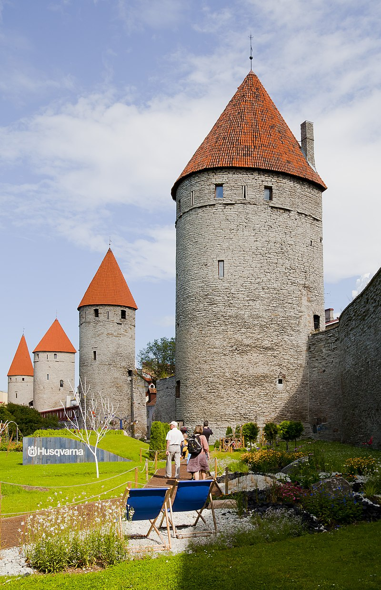
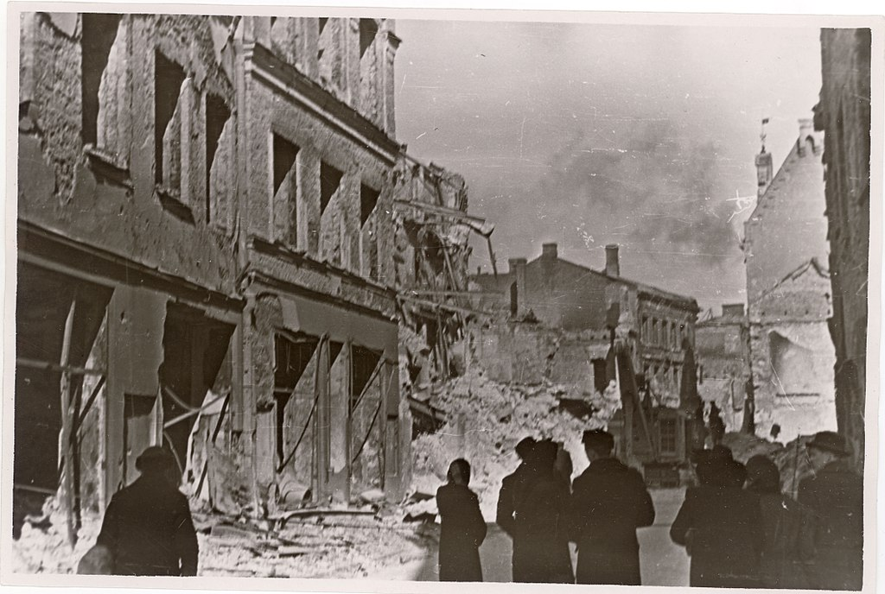
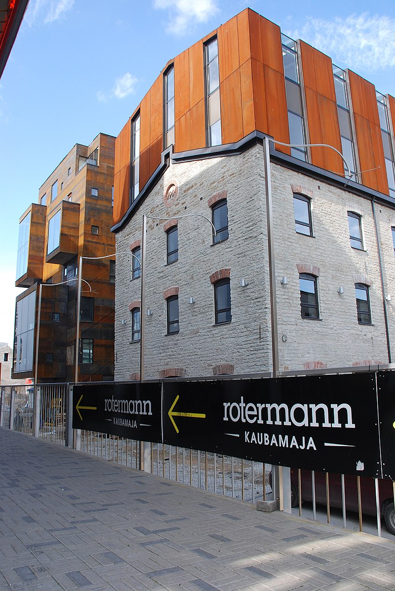
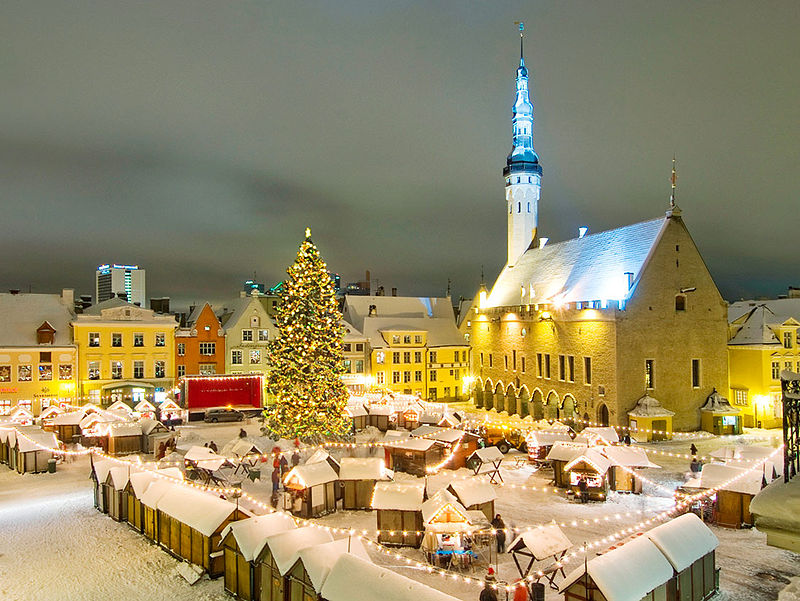

Tallinn received Lübeck city rights in 1248, however the earliest evidence of human population in the area dates back nearly 5,000 years. The first recorded claim over the place was laid by Denmark after a successful raid in 1219 led by King Valdemar II, followed by a period of alternating Scandinavian and Teutonic rulers. Due to the strategic location by the sea, its medieval port became a significant trade hub, especially in the 14–16th centuries, when Tallinn grew in importance as the northernmost member city of the Hanseatic League. Tallinn Old Town is one of the best-preserved medieval cities in Europe and is listed as a UNESCO World Heritage Site. Tallinn has the highest number of start-ups per person among European countries and is the birthplace of many international high-technology companies, including Skype, Bolt and Wise. The city is home to the headquarters of the European Union's IT agency, and to the NATO Cyber Defence Centre of Excellence. In 2007, Tallinn was listed among the top-10 digital cities in the world.
The first archaeological traces of a small hunter-fisherman community's presence in what is now Tallinn's city centre are about 5,000 years old. The comb ceramic pottery found on the site dates to about 3000 BCE and corded ware pottery around 2500 BCE. Toompea Castle (Toompea loss) Around 1050, the first fortress was built on Tallinn - Toompea. As an important port for trade between Novgorod and Scandinavia, it became a target for the expansion of the Teutonic Knights and the Kingdom of Denmark during the period of Northern Crusades in the beginning of the 13th century when Christianity was forcibly imposed on the local population. Danish rule of Tallinn and northern Estonia started in 1219. In 1285, Tallinn, then known more widely as Reval, became the northernmost member of the Hanseatic League – a mercantile and military alliance of German-dominated cities in Northern Europe. The king of Denmark sold Reval along with other land possessions in northern Estonia to the Teutonic Knights in 1346. Medieval Reval enjoyed a strategic position at the crossroads of trade between the rest of western Europe and Novgorod and Muscovy in the east. The city, with a population of about 8,000, was very well fortified with city walls and 66 defence towers.
Tallinn is the financial and business capital of Estonia. The city has a highly diversified economy with particular strengths in information technology, tourism and logistics. Over half of the Estonian GDP is created in Tallinn. In 2008, the GDP per capita of Tallinn stood at 172% of the Estonian average. In addition to longtime functions as seaport and capital city, Tallinn has seen development of an information technology sector; in its 13 December 2005, edition, The New York Times characterised Estonia as "a sort of Silicon Valley on the Baltic Sea". One of Tallinn's sister cities is the Silicon Valley town of Los Gatos, California. Skype is one of the best-known of several Estonian start-ups originating from Tallinn. Many start-ups have originated from the Institute of Cybernetics. In recent years,[when?] Tallinn has gradually been becoming one of the main IT centres of Europe, with the Cooperative Cyber Defence Centre of Excellence (CCD COE) of NATO, the EU Agency for large-scale IT systems and the IT development centres of large corporations, such as TeliaSonera and Kuehne + Nagel being based in the city. Smaller start-up incubators like Garage48 and Game Founders have helped to provide support to teams from Estonia and around the world looking for support, development and networking opportunities.
What can arguably be considered to be Tallinn's main attractions are located in the Tallinn Old Town (divided into a "lower town" and Toompea hill) which is easily explored on foot. The eastern parts of the city, notably Pirita (with Pirita Convent) and Kadriorg (with Kadriorg Palace) districts, are also popular destinations, and the Estonian Open Air Museum in Rocca al Mare, west of the city, preserves aspects of Estonian rural culture and architecture. The historical wooden suburbs like Kalamaja, Pelgulinn, Kassisaba and Kelmiküla and revitalized industrial areas like Rotermanni Quarter, Noblessner and Dvigatel are also unique places to visit.
